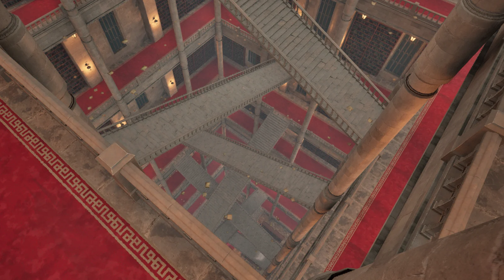

The Trials of the Arcane Academy
The Trials of the Arcane Academy is a fantasy RPG about learning spells and uncovering a conspiracy at a magical school. I extended a supplied RPG template with project-specific trials, encounter behavior, and branching narrative design.

My contribution
- Connected pre-combat trials to the existing mission system through Blueprints.
- Designed the progression from spell lessons to puzzles and boss encounters.
- Directed the story branches and specified the dialogue data format.
- Worked on enemy setup through Blueprint children and exposed gameplay stats.
Spells and trials
I planned each new spell around a challenge that gives the player a reason to use it. The progression moves from a lesson to a pre-combat trial and then a boss encounter. The design pairs spell effects with particular problems, such as interrupting an enemy turn or dealing with an evasive opponent.
I kept the template’s mission foundation where it suited the game and connected my pre-combat trial tool to it through Blueprints.
Enemy setup
I worked with Blueprint children of the enemy classes to assign skeletal meshes and configure exposed stats. The C++ base provides combat-result events that Blueprints can use for feedback. This let me work on the game-specific setup while using the shared enemy foundation.
Branching dialogue
I directed the story around the player’s relationship with Headmaster Veritas and the rebellion. The dialogue specification tracks alignment toward two possible outcomes while bringing scenes back to the main progression.
I specified conversation identifiers, response naming, and the order of player and character replies for the dialogue CSV. During revision, I corrected added plot details that conflicted with my story document and pushed for fuller, more natural conversations.